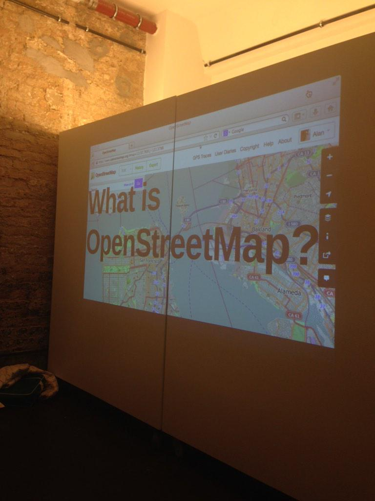

INTRO
Together we are the
co-founders of
Maptime.
Let's start with a few things that everyone in geo knows to be true.
Maps are hard.
There are many ways to achieve the same goals with spatial tools.
Many tools overlap.
Many processes are similar.
When you know one way to do things, it’s easy to fall back on it. It’s easy to avoid learning new tools.
We are privileged, because we got the education to at least know one way to do things.
What about all the people who haven’t yet had that opportunity?
A bold statement:
We are all educators.
Even you.
You may be wondering what the heck I’m talking about.
But think about the last time you talked to a coworker, explaining to her what you did and how you did it.
Think about giving a cartography review.
Think about someone you met this week – did you tell them what you do? You probably taught them something new.
Something they didn’t know before.
Thats teaching.
We are all teachers, and we are all building implicit learning communties all the time -- at home, in our offices, on the train during our evening commute, verbally, nonverbally, intentionally and unintentionally.
What is Maptime?
Maptime is just a formalization of these implicit communities.
It’s not education by happenstance, but by intention. It’s the realization that we’re all teaching and learning all the time, and we can hone those experiences to meet our goals. That’s the nutshell.
What are those goals?
In our case, we know about maps. We know about technology. And we want to put those skills and tools in the hands of anyone who wants them.
(As it turns out, a lot of other people want to do this too, but we’ll get to that in a sec.)
LYZI
What does that mean, then? Accessibility. What’s the biggest hurdle to jump when getting started making maps? Money. So we decided to build our community around open source.
Open source tools have their own challenges. Often they are not super well documented. They are sometimes not well-maintained. They jump versions and don’t always have backwards compatibility. There are a ton of tools that require separate technical knowledge. It’s hard to know where to start.
But what’s the upshot? Open source tools are (mostly) free, which gives us a baseline to at least start teaching and learning with them. And it turns out that a product that is constantly changing is actually awesome for teaching. (And, also, it turns out that knowing about open source tools is pretty awesome if you’re trying to get a job in our field.)
This accessibliity has allowed Maptime to spread rapidly. It requires a combination of a few things:
• implicit existing learning communities (check)
• a desire to learn about maps (check), and accessible tools (check). Put those three things together
• a little logistical prowess and some love, and you get a Maptime chapter.
Sixty of them, in fact. All around the world.
What are the challenges we’ve faced, and how have we addressed them?
Getting people to teach. We’ve addressed this one by the fact that beginners make the best teachers, and we can encourage beginners to teach by leading by example. We are all beginners. We have no idea what we’re doing. And that’s awesome.
People from different backgrounds. Often, the people who show up to Maptime chapters are a mix of seasoned developers and GIS analysts, artists and educators and planners and everyone in between. How do we address this during meetups? We embrace it. We encourage learning from each other. We have a variety of topic areas we teach, and we encourage everyone to teach something they care about and are interested in. We try to make sure our topic areas are diverse over time so as to provide on-ramps for anyone and everyone.
Different chapters wanting to do different things. AWESOME! Every chapter is different and organizes themselves differently. Hack nights, project nights, OSM edit-a-thons, tutorials, the list goes on and on.
Lack of resources. Maptime has turned itself into a resource machine -- we encourage chapters to take existing resources created by other Maptimers and edit them to their liking, publishing the results. Everything happens in the open. Everyone shares. It’s wildly successful.
BETH
Amid this success, something else has become clear.
There is no clear road map to becoming an open source geo expert.
Maptime is an excellent on ramp. We've made this technology easier to grasp.
But where do people go from there?
Learning any craft takes time, practice, focus, and independent study.
At Maptime people get to play with tools and learn concepts among peers.
Some people, before they know it, have gone from beginner to teacher.
amazing!
But
Some students need more guidance.
Some students need more structure.
That's ok.
People come to Maptime as adults.
Being an adult is great! But our brains have lost neuroplasticity.
Learning new things takesmore time than it did when we were younger.
Picking up new technology can be daunting.
It's also hard to really devote time to learning a new skill in your off hours.
It can also be hard for a group of volunteers to offer even more time to help.
I would love to see a more sustainable solution to in-depth OS GIS education.
What if some of our volunteers got paid?
What if OS geo tools were integrated into GIS certifications?
What if you could learn spatial analysis through QGIS and ArcGIS?
What if coding and design principles were taught alongside cartographic and ones?
What if there was a code school focused on OS Geo?
These are, admittedly, big questions.
I bet I'm not the only one asking them.
When I think about the future of geo education, and the path to get there, these are the ones I'm asking.
They are ones that make me think about the current education revolution.
They make me think about the future of academia.
#daunting
Changing academia is like moving a boulder.
...which I will leave to
Zach Coffin, who does it all the time.
Managing Maptime is like moving pebbles.
CAMILLE
ALAN
ALAN PART 1: open source is amazing, except when it's not
Open Source is amazing!
Tools and data are there for you to use! For free!
You can see how it works! You can fix it!
But unfortunately...
Open Source is also awful!*
(*sometimes)
Made by technologists for technologists
A community culture that is:
unwelcoming
competitive
snobby
generally obnoxious
Writing and learning Open Source takes a lot of privilege.
It's a utopia! ...but mainly for white dudes
Maptime is fighting for the soul of open source.
OpenStreetMap: case in point
It can be complicated

It can be unfriendly

Detail and quality: amazing!
Berlin
...but not everywhere. :(
Lagos
Imbalances here at home
In the US, the GIS workforce is 46% female. Worldwide it's 37%.
OSM: 3% female
Open Source: 1%
OSM 101
@MaptimePR
@MaptimeOSL
Diversity is central to Maptime's mission.
It's not just a task for the underrepresented. It's a task for everybody.
Maps made by everyone
ALAN PART 2: So, you're not a beginner?
Maptime is for you, too!
You're not good a teaching?
No problem! You can learn!
Your ego: let it go!
Beginners mind
END OF ALAN'S SECTIONS
CONCLUSION!!
tbd
What is next for Maptime? We don’t really know. And that’s amazing! This community is built by its members. Every chapter changes the game. Every new member provides new insights. Every individual perspective changes the perspective of the whole. That’s what an open-source community is. That’s how it works. And it’s important.
That’s why you should get involved. Geospatial expertise is so valuable, especially to some of these groups where most of the people there are new to mapping. If you think you shouldn’t go to Maptime because you can’t code, you are mistaken! If you think you shouldn’t start a chapter because you aren’t an expert, you’re in the wrong! The best teachers are beginners. That’s where we are. We intentionally pick things to teach we don’t know about just so we can learn. You have skills and knowledge. You’re hungry for more. Maptime is here for you -- both in practice and in idea. At very least, try to start noticing when you’re teaching and learning throughout your day. I imagine it’ll surprise you.
These slides are here so beth can have a reference for how to style things in Big.
"A certain base level of design and coding skill is required, of course, but I expect almost anybody seriously thinking of launching a bazaar effort will already be above that minimum. The open-source community's internal market in reputation exerts subtle pressure on people not to launch development efforts they're not competent to follow through on. So far this seems to have worked pretty well."
A different time.
1. Cartography
2. Web Programming
3. Spatial Analysis
4. Data Management and Acquisition
5. Community Mapping
The number of tools you can use for mapping has been growing exponentially.